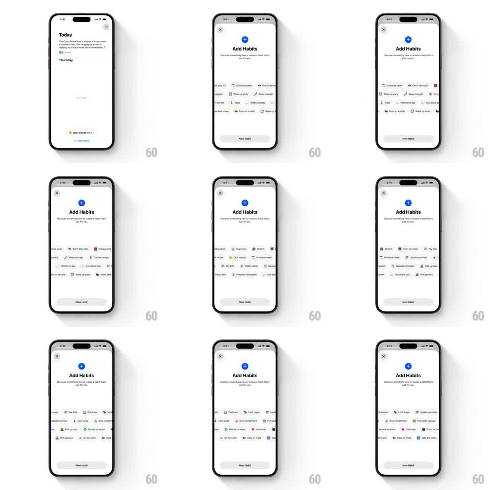

Media
Frame-by-frame

Rebuild this interaction 1:1: Habitastic's Add Habits sheet - a multi-row tag cloud of habit chips (Schedule week, Don't bite nails, Yoga, Wake up early, Post on socials...) auto-scrolls in alternating directions like a ticker, and swiping a row throws it with momentum.

Rebuild this interaction 1:1: Habitastic's Add Habits sheet - a multi-row tag cloud of habit chips (Schedule week, Don't bite nails, Yoga, Wake up early, Post on socials...) auto-scrolls in alternating directions like a ticker, and swiping a row throws it with momentum. ## Integration Integration: stack-agnostic spec - springs given as stiffness/damping, timed motions as duration + curve; map every value to your framework and animation library of choice. ## Scene Light sheet over the Today screen: close (x), blue plus badge, "Add Habits" title with subcopy, then 3-4 horizontal rows of rounded habit chips (icon + label, soft tinted backgrounds) clipped at the screen edges, and a "New Habit" button at the bottom. ## Motion spec Pattern: auto-scrolling multi-row ticker with swipe momentum, indefinite. - Auto-scroll: each row drifts horizontally at ~24pt/s; odd rows move left, even rows move right, content looping seamlessly. - Swipe: dragging a row takes control of that row only - it tracks the finger 1:1 and flings with decaying momentum (initial velocity from the gesture, ~0.92 friction), then eases back into auto-scroll over 600ms. - Edge fade: rows fade out at both screen edges (gradient masks) so chips never hard-clip. - Chip press: a tap scales the chip (0.95 -> 1, 150ms) and selects it with a highlight ring. ## Calibration - Rows never sync up - keep the alternating directions and slightly different speeds per row for depth. - Auto-scroll resumes gently; no velocity snap back to cruise speed. ## Reduced motion Rows are static; swiping still scrolls manually. ## Don't miss - Chips carry tiny colored icons per habit - no text-only pills. - The ticker is the whole middle of the sheet; header and button stay fixed.